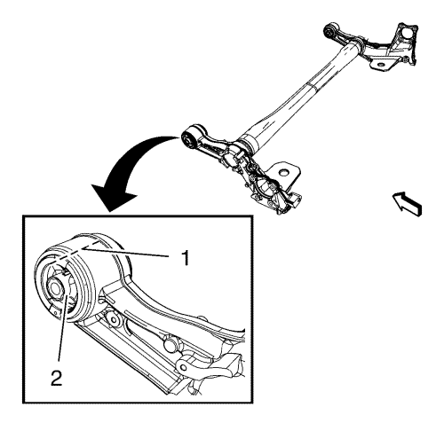
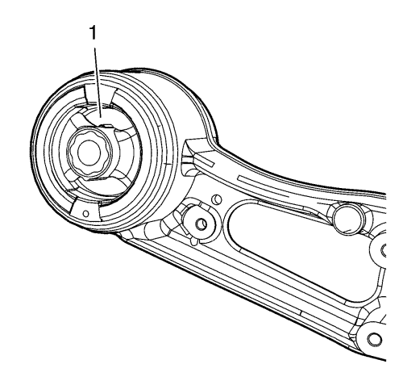
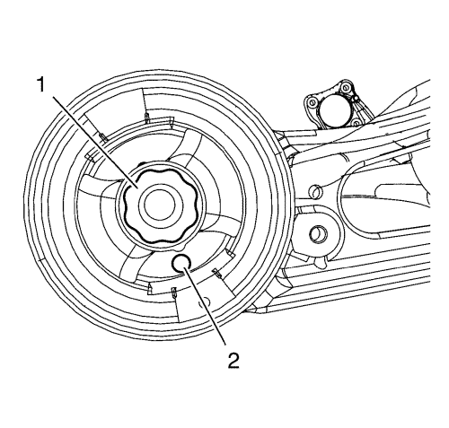
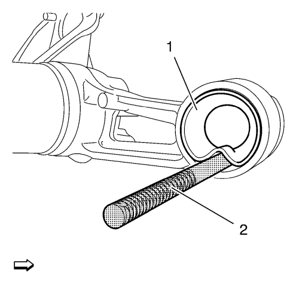
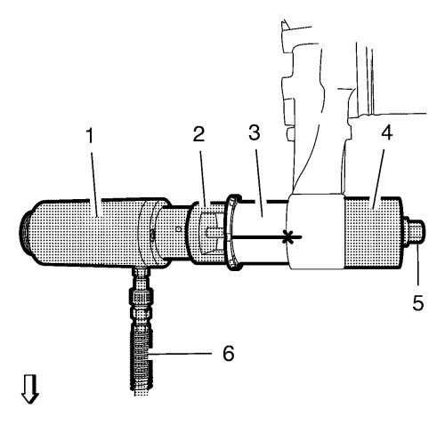

Sustitución del casquillo del eje trasero — Varillaje de suspensión trasera Watt
Herramientas especiales
| • | CH-6615-10 Cilindro hidráulico |
| • | CH-6616 Bomba hidráulica manual |
Para herramientas regionales equivalentes. Consultar Herramientas especiales .
Procedimiento de desmontaje
Advertencia: Si fuera necesario, utilice gafas protectoras para evitar sufrir lesiones.
- Retire el eje trasero. Consultar Sustitución del eje trasero → Varillaje de suspensión trasera Watt → Manivela compuesta .
- Con la ayuda de un segundo mecánico, coloque el eje trasero en un banco de trabajo.

- Marque la posición de instalación (1) del casquillo del eje trasero (12) sobre el eje trasero utilizando un rotulador.
Utilice el espacio superior del casquillo para realizar la alineación.
- Coloque una bandeja de vaciado bajo el eje.

- Taladre 8 orificios alrededor a través de los casquillos de caucho (1) con un taladro de 10 mm (0,4 pulg.).

- Sierre con cuidado el entorno del núcleo del casquillo (1) del casquillo del eje trasero. Utilice el orificio inferior (2") para insertar la sierra.
- Retire el núcleo del casquillo del casquillo.

- Quite el casquillo (1) mediante un cincel CH-48377-1 (2) y un martillo.

- Marque la posición de montaje (2) del NUEVO casquillo del eje trasero (1) como se muestra en el gráfico anterior.

- Alinee la marca del casquillo (1) con la marca del eje trasero (2).

- Monte los siguientes componentes en el casquillo del eje trasero y en el eje trasero:
| • | Cilindro CH-6615-10 (1). |
| • | Adaptador CH-49459 (2). |
| • | NUEVO casquillo del eje trasero (3). |
| • | Adaptador CH-906-42 (4) |
| • | Monte y apriete la tuerca del contador (5) en el husillo del cilindro CH-6615-10 (1) |
- Conecte el tubo flexible de presión (6) de la bomba CH-6616 al cilindro CH-6615-10.
- Encaje con cuidado el casquillo del eje trasero (3) en el eje trasero con la bomba CH-6616.
- Cuando el recorrido de elevación del cilindro CH-6615-10 alcance el tope, suelte la presión de la bomba CH-6616, vuelva a apretar la tuerca del contador (5) y encaje el casquillo del eje trasero en el eje trasero hasta su posición de montaje final.
- Retire TODAS las herramientas especiales.
- Monte el eje trasero. Consultar Sustitución del eje trasero → Varillaje de suspensión trasera Watt → Manivela compuesta .
| © Copyright Chevrolet. Reservados todos los derechos |